Header A: consolidated menu
Rejected by independent review
The menu still consumes title width and makes Share a two-step action.
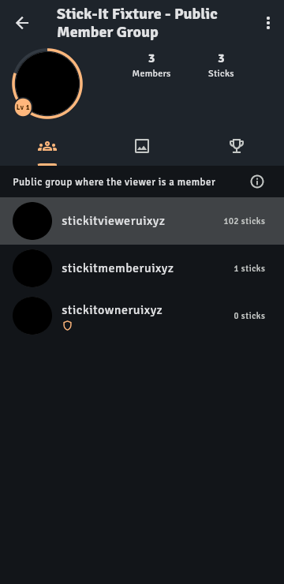
Open group actions
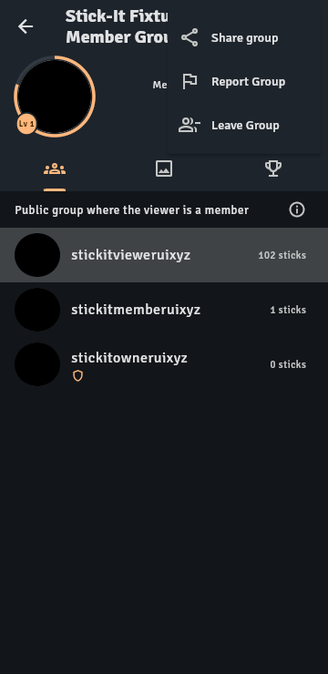
Rejected by independent review
The menu still consumes title width and makes Share a two-step action.


Kept by independent review
Gives the title full width while Share remains immediate and other actions stay in a familiar menu.
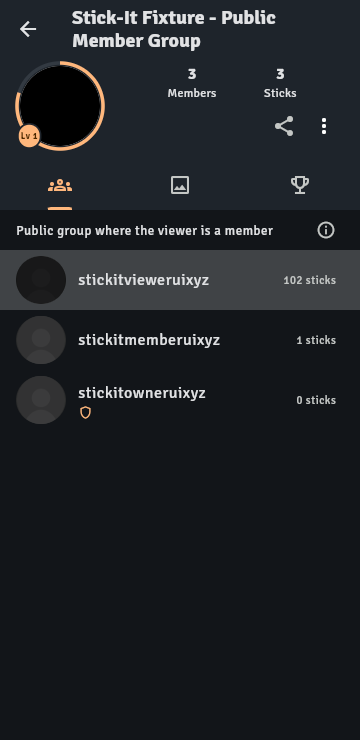
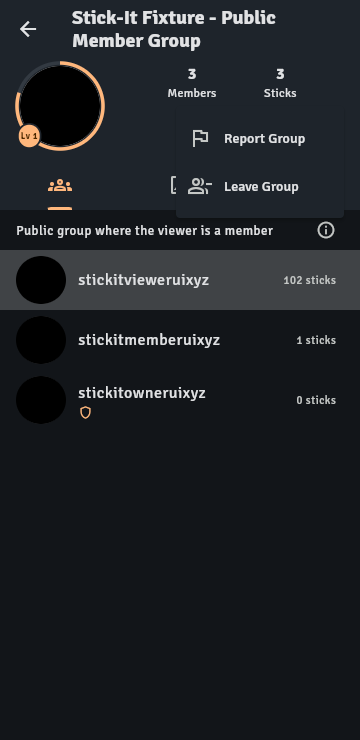
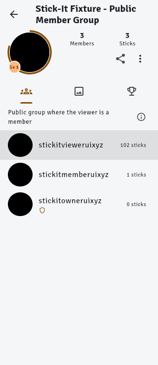
Rejected by independent review
An avatar-attached button suggests an avatar action; the sheet adds a modal step.
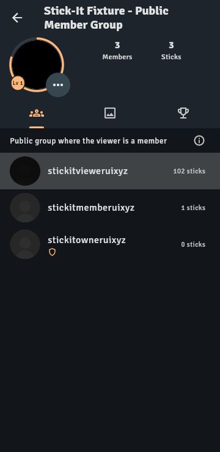
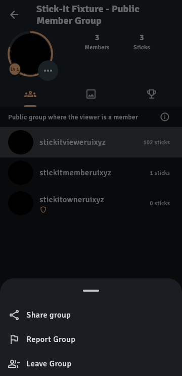
Kept by independent review
Shows the current goal in each category without a full catalog. Refined with an explicit All tiers entry.
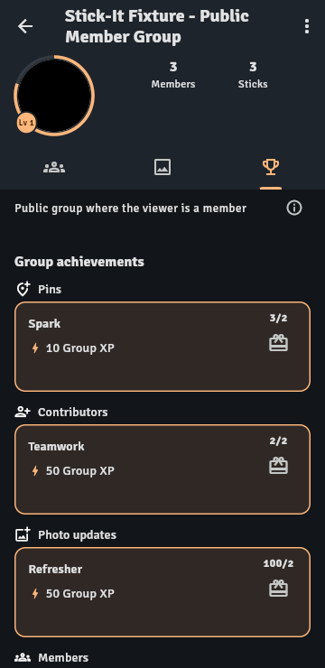
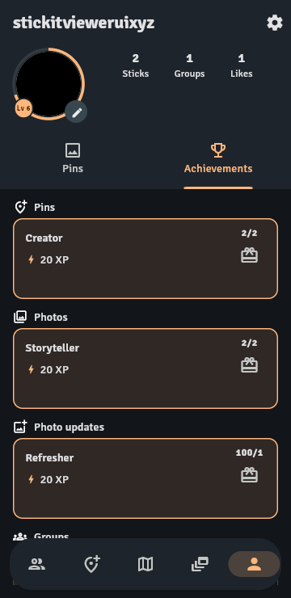
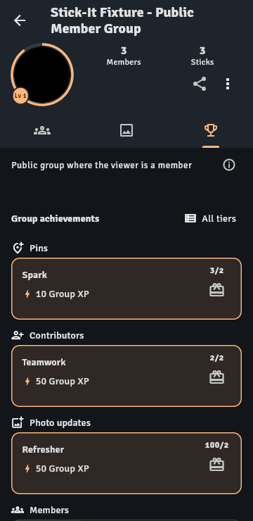
Rejected by independent review
Opening a category into every tier recreates a long, card-heavy catalog.
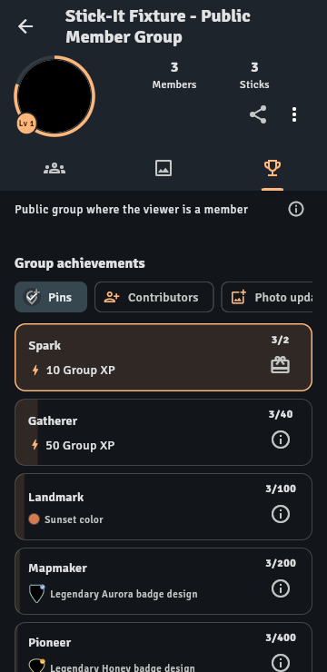
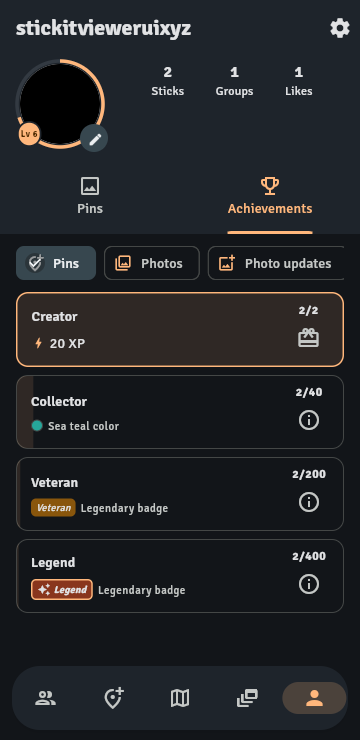
Rejected by independent review
The icon-only statuses are less self-explanatory and separate goals from their category context.
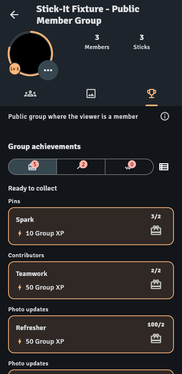
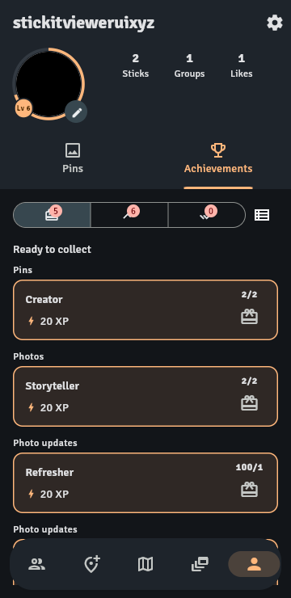